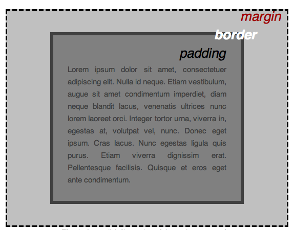
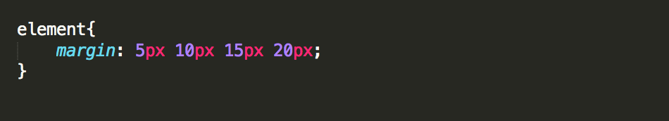
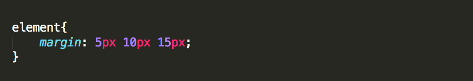
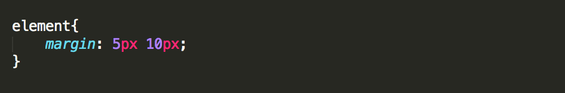
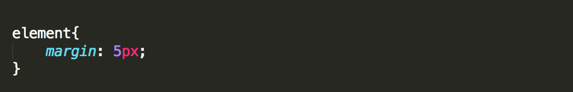

Padding | Borders | Margins
Padding: the space between your content and your border.
Border: surrounds the padding.
Margin: the space between your border and another element.
You can define these properties in two ways:
Like this
*** For padding and borders replace "margin" with "padding" or "border" ***
or you could use shorthand
This will set the top, right, bottom, and left margins to 5px, 10px, 15px, and 20px respectively.
This will set the top margin to 5px, the right and left margins to 10px, and the bottom margin to 15px.
This will set the top and bottom margins to to 5px and the left and margins to 10px.
This will set all four margins to 5px.